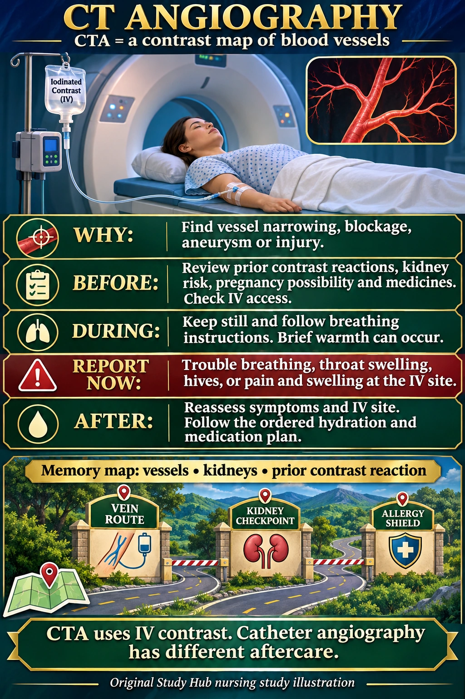

NUR 258 · Module 7 · Neurologic nursing
CT angiography: nursing care
Computed tomography angiography (CTA) uses IV contrast to map blood vessels and identify vascular problems.
Report breathing difficulty, throat swelling, hives or pain and swelling at the IV site immediately.

Nursing steps in readable text
Purpose
CT angiography combines CT scanning with contrast through a peripheral IV to evaluate blood vessels. In stroke, distinguish the vessel study from the initial noncontrast head CT used to assess for bleeding.
Before
Review prior contrast reactions, kidney risk, medicines and pregnancy possibility. Check IV access. Follow radiology instructions for preparation and any medication changes.
During
The patient keeps still and follows breathing instructions. Brief warmth or a metallic taste may occur. Breathing difficulty, throat swelling, hives or IV-site pain and swelling need immediate assessment.
After
Reassess symptoms and the IV site. Follow the ordered hydration and medication plan. CTA does not automatically require the groin-puncture precautions used after arterial catheter angiography.
Memory picture key
- Vessel road map — CTA shows vascular narrowing, blockage, aneurysm or injury.
- Kidney checkpoint — Review kidney risk and ordered laboratory testing.
- Reaction shield — Ask about previous reactions to contrast material.
The small memory scene uses symbols. It is an original mnemonic, not an official Picmonic product.
Practice clinical judgment
After an IV CTA, should you automatically apply femoral arterial-puncture aftercare?
Show the answer
No. Identify the procedure actually performed. CTA generally uses a peripheral IV. Catheter angiography can involve arterial access and has different aftercare.
Sources and original handouts
No exact topic-specific Simple Nursing handout was found in the site’s indexed Simple Nursing collection. Existing related handouts stay with their original lessons.
Clinical sources checked November 7, 2026. Use the assigned course material and individual clinical orders. Artwork is educational and does not specify a device’s technical fitting procedure.